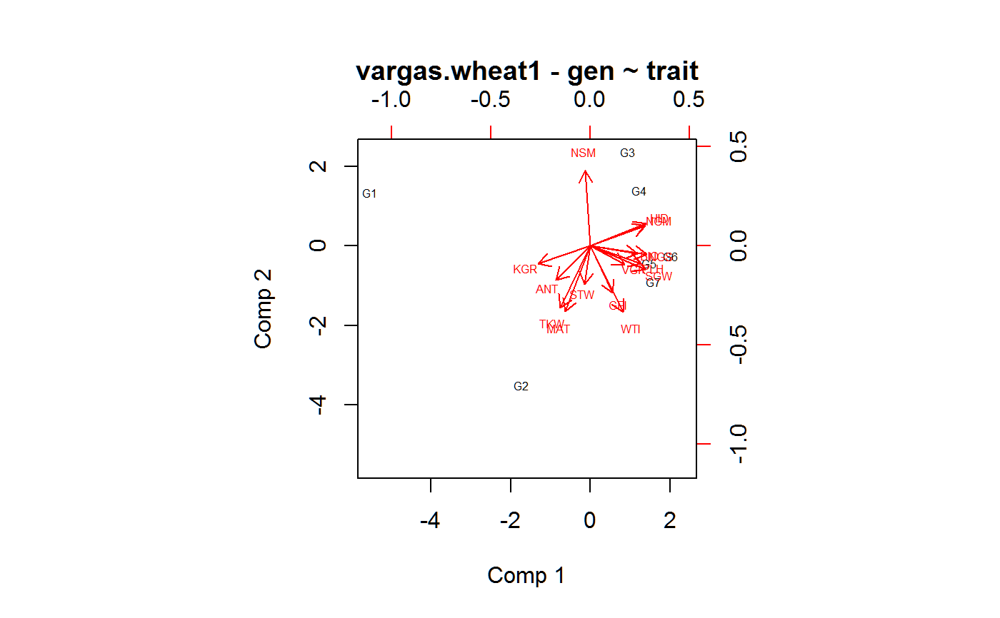

vargas.wheat1.RdYield of Durum wheat, 7 genotypes, 6 years, with 16 genotypic variates and 16 environment variates.
data("vargas.wheat1.covs") data("vargas.wheat1.traits")
The vargas.wheat1.covs dataframe has 6 observations on the following 17 variables.
yearyear, 1990-1995
MTDMean daily max temperature December, deg C
MTJJanuary
MTFFebruary
MTMMarch
mTDMean daily minimum temperature December, deg C
mTJJanuary
mTFFebruary
mTMMarch
PRDMonthly precipitation in December, mm
PRJJanuary
PRFFebruary
PRMMarch
SHDa numeric vector
SHJJanuary
SHFFebruary
SHMMarch
The vargas.wheat1.traits dataframe has 126 observations on the following 19 variables.
yearyear, 1990-1995
repreplicate, 3 levels
gengenotype, 7 levels
yieldyield, kg/ha
ANTanthesis, days after emergence
MATmaturity, days after emergence
GFIgrainfill, MAT-ANT
PLHplant height, cm
BIObiomass above ground, kg/ha
HIDharvest index
STWstraw yield, kg/ha
NSMspikes / m^2
NGMgrains / m^2
NGSgrains per spike
TKWthousand kernel weight, g
WTIweight per tiller, g
SGWspike grain weight, g
VGRvegetative growth rate, kg/ha/day, STW/ANT
KGRkernel growth rate, mg/kernel/day
Conducted in Ciudad Obregon, Mexico.
Mateo Vargas and Jose Crossa and Ken Sayre and Matthew Renolds and Martha E Ramirez and Mike Talbot, 1998. Interpreting Genotype x Environment Interaction in Wheat by Partial Least Squares Regression, Crop Science, 38, 679--689. http://doi.org/10.2135/cropsci1998.0011183X003800030010x
Data provided by Jose Crossa.
library(agridat)data(vargas.wheat1.covs) data(vargas.wheat1.traits) libs(pls) libs(reshape2) # Yield as a function of non-yield traits Y0 <- vargas.wheat1.traits[,c('gen','rep','year','yield')] Y0 <- acast(Y0, gen ~ year, value.var='yield', fun=mean) Y0 <- sweep(Y0, 1, rowMeans(Y0)) Y0 <- sweep(Y0, 2, colMeans(Y0)) # GxE residuals Y1 <- scale(Y0) # scaled columns X1 <- vargas.wheat1.traits[, -4] # omit yield X1 <- aggregate(cbind(ANT,MAT,GFI,PLH,BIO,HID,STW,NSM,NGM, NGS,TKW,WTI,SGW,VGR,KGR) ~ gen, data=X1, FUN=mean) rownames(X1) <- X1$gen X1$gen <- NULL X1 <- scale(X1) # scaled columns m1 <- plsr(Y1~X1) loadings(m1)[,1,drop=FALSE] # X loadings in Table 1 of Vargas#> Comp 1 #> ANT -0.21589859 #> MAT -0.15861226 #> GFI 0.14008021 #> PLH 0.31638335 #> BIO 0.29630833 #> HID 0.34930528 #> STW -0.03876374 #> NSM -0.03472883 #> NGM 0.34359779 #> NGS 0.35502558 #> TKW -0.19102141 #> WTI 0.20568622 #> SGW 0.34543954 #> VGR 0.21702042 #> KGR -0.32935119# Yield as a function of environment covariates Y2 <- t(Y0) X2 <- vargas.wheat1.covs rownames(X2) <- X2$year X2$year <- NULL Y2 <- scale(Y2) X2 <- scale(X2) m2 <- plsr(Y2~X2) loadings(m2)[,1,drop=FALSE] # X loadings in Table 2 of Vargas#> Comp 1 #> MTD -0.29946437 #> MTJ 0.14665034 #> MTF 0.07040468 #> MTM 0.40236460 #> mTD 0.32859831 #> mTJ 0.18260903 #> mTF 0.25749215 #> mTM 0.14059032 #> PRD -0.08387786 #> PRJ -0.12277326 #> PRF -0.03457021 #> PRM -0.21542249 #> SHD -0.38252353 #> SHJ -0.05597998 #> SHF -0.43981570 #> SHM 0.37609945